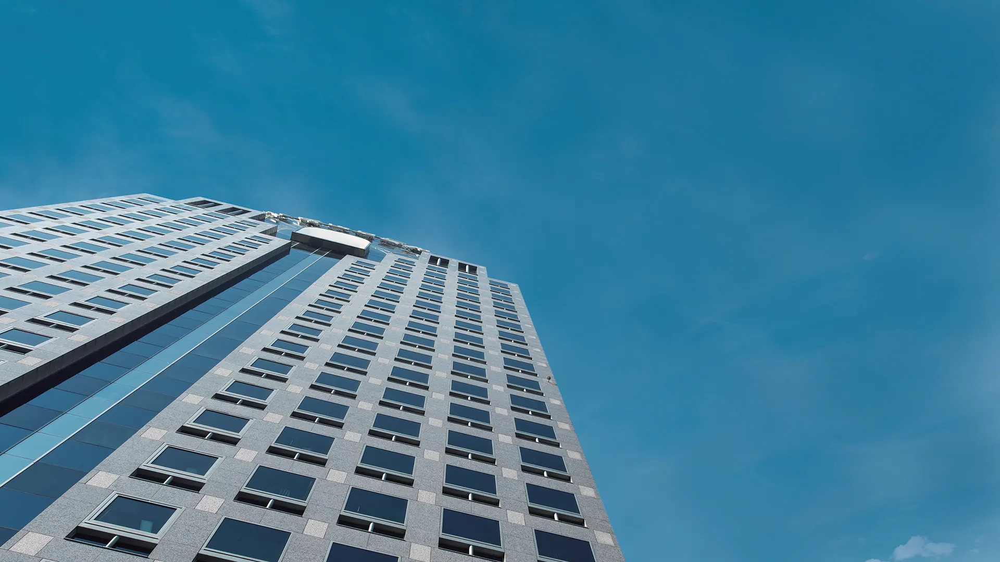
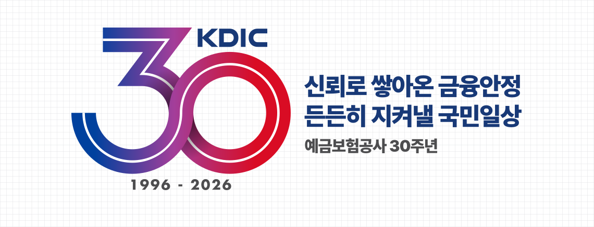
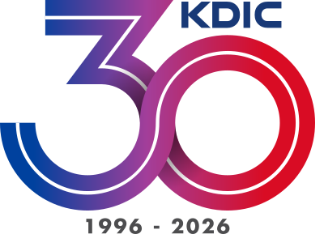
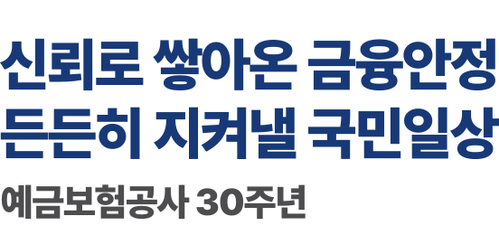

사장 인사말 요약
공개된 사장 인사말의 요지를 보람찬크루가 정리한 안내 문구입니다. 원문은 원본 사이트에서 볼 수 있습니다.
30년을 돌아보며
다음 30년을 다짐하다
창립 30주년을 맞아 사장은 먼저 지난 30년을 함께해 온 전·현직 임직원에게 감사와 존경을 전했습니다.
1996년 6월 1일 예금자를 보호하고 금융제도의 안정을 지킨다는 사명으로 출범했고, 출범 이듬해 외환위기라는 첫 시험대에 올랐다고 돌아봅니다.
외환위기 때는 신속한 보험금 지급, 자금지원, 부실금융회사 정리로 시장의 신뢰를 지키는 최전선에 섰고, 2011년 저축은행 사태에서는 가지급금 지급 시기를 앞당기고 한도를 넓혔으며 금융거래 중단 없는 정리로 예금자의 불편을 줄였다고 설명합니다.
2009년 목표기금제와 2014년 차등보험료율제를 도입하면서, 위기가 난 뒤 수습하는 기관에서 부실을 미리 막는 기관으로 발전했다는 점을 짚습니다.
2025년 예금보호한도 1억 원 시대를 연 일, 착오송금 반환지원, 디지털예보와 AI 기반 리스크관리, ALM 기반 기금 운용 같은 최근의 변화도 소개합니다.
이 온라인 역사관을 위기마다 예금과 시장의 신뢰를 지켜 온 노력의 기록이자 앞으로의 이정표라고 소개하며, 신뢰를 가장 큰 자산으로 삼아 금융안정의 최후 보루로서 사명을 이어 가겠다는 뜻을 밝힙니다.
공개 자료 요약
30주년 기념 영상
창립 30주년 기념 사사 헌정식과 비전 선포식 영상을 바로 재생합니다.
30주년 엠블럼
믿음과 새로움, 끝없는 발전을 한 모양에 담았습니다.

엠블럼 설명

30주년 엠블럼의 청색은 신뢰를, 적색은 혁신과 역동성을 뜻합니다. 두 색이 이어진 무한대(∞) 모양에는 30년을 넘어 끝없이 발전하며 금융시장의 안정을 뒷받침하겠다는 뜻이 담겼습니다.
슬로건 설명

엠블럼과 함께 쓰는 슬로건은 지난 30년처럼 금융계약자를 보호하고 제도의 안정을 지켜, 앞으로도 국민의 일상을 든든히 받치겠다는 다짐입니다.
다음 쪽
역사 하이라이트